1.独学で制作したもの
1.Android用メモアプリ
役立つツールを制作したいと考え、制作しました。 メモ作成、更新、削除、一覧表示機能があります。 利用規約画面もあり、 同意ボタンを押すとメモ作成できるようになります。メモを更新したい場合はそのメモをクリックすると更新画面に遷移します。 Google様に申請を出し結果を待っています。リリース間近です！！
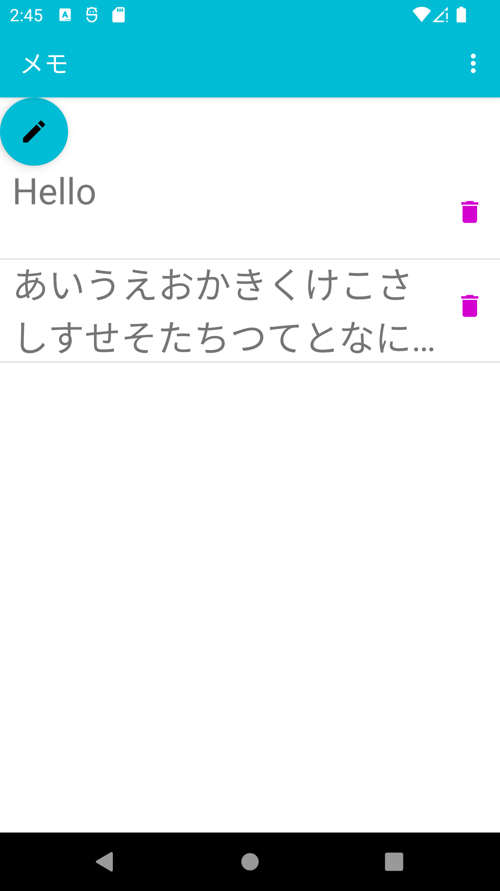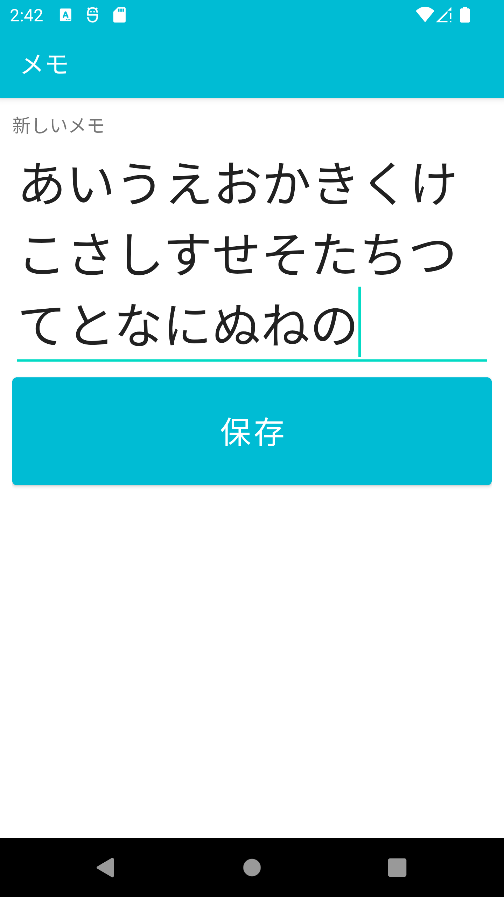
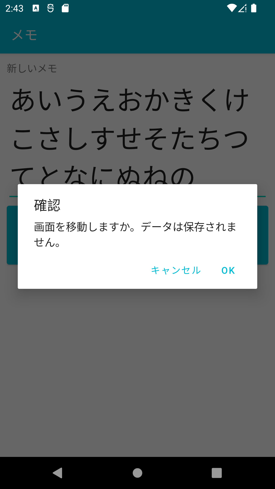 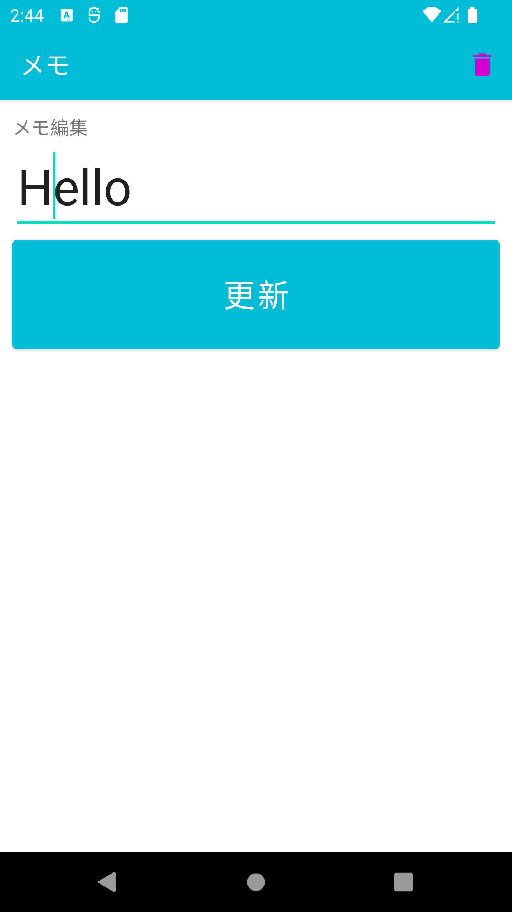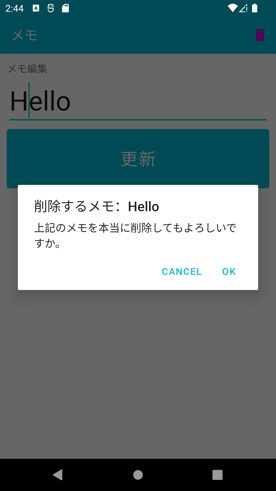
2.動物英語クイズ
簡単なクイズアプリを制作いたしました。英語動物名の日本語訳を選び正解すると正解と表示され、次へボタンが押せるようになります。6問出題後、クイズ終了画面に遷移します。
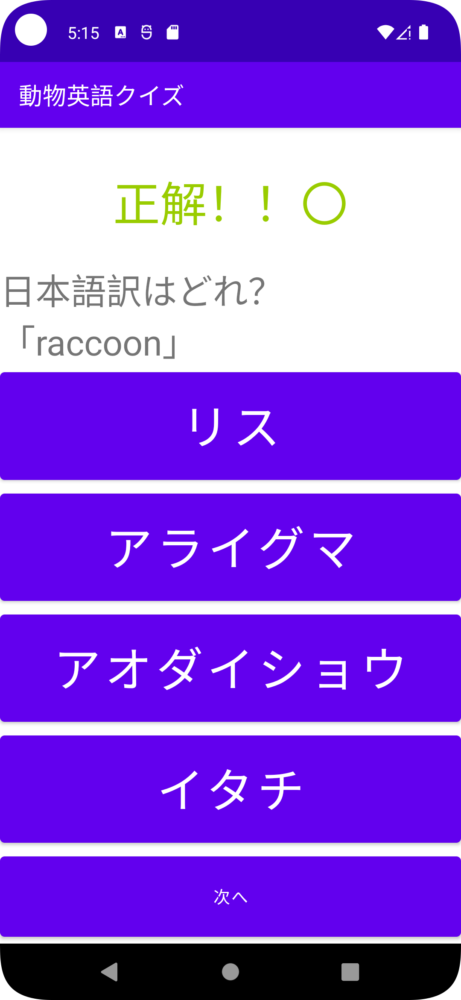 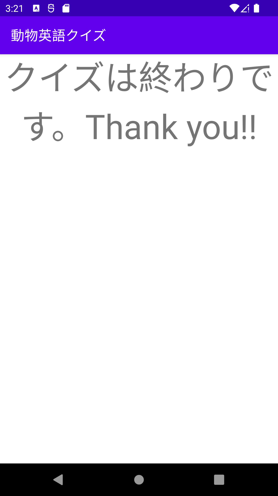3.Spring Boot My Batisで作成、一覧表示、削除処理（開発中！）
My Batisではない方は、インターネットを参考にしたコードでエラーなく実行できます。作成、一覧表示、編集、削除可能！
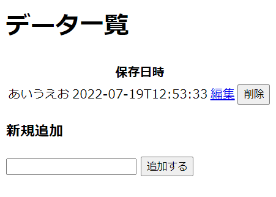
4.Ruby on Railsで、高齢者向けコミュニティサイト
若い方向けに作られたサービスは多いので、高齢者をターゲットにしました。老後の生活情報を共有できて、 困ったことを質問でき,解決できるサービスは需要があると考え、制作しました。
トップ画面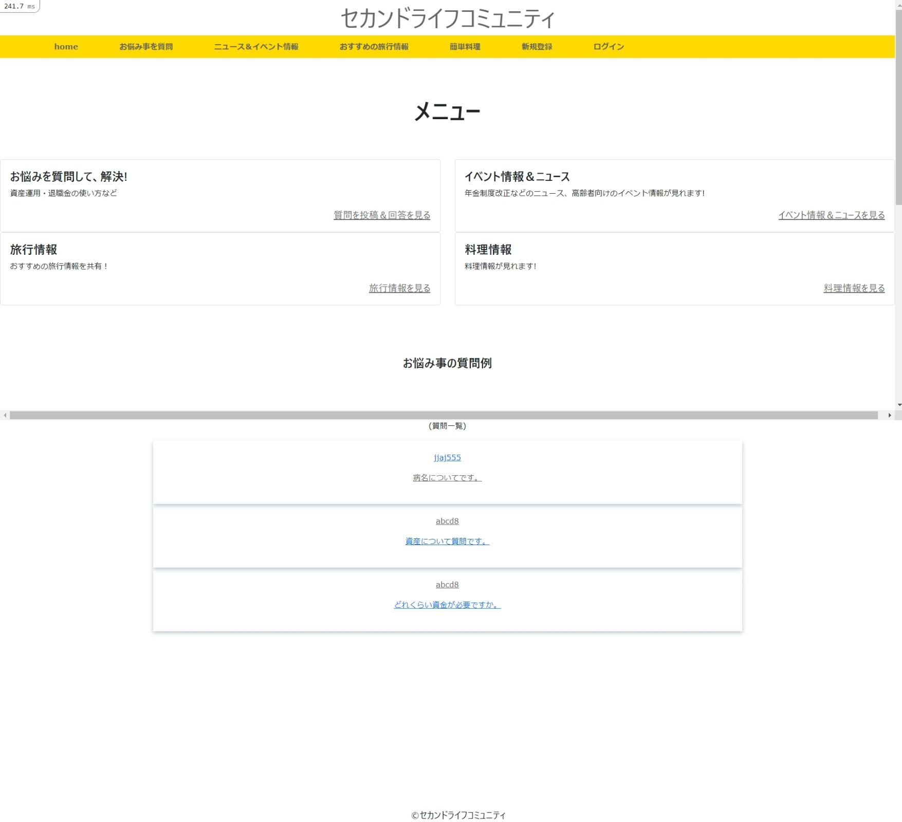
質問投稿のページ
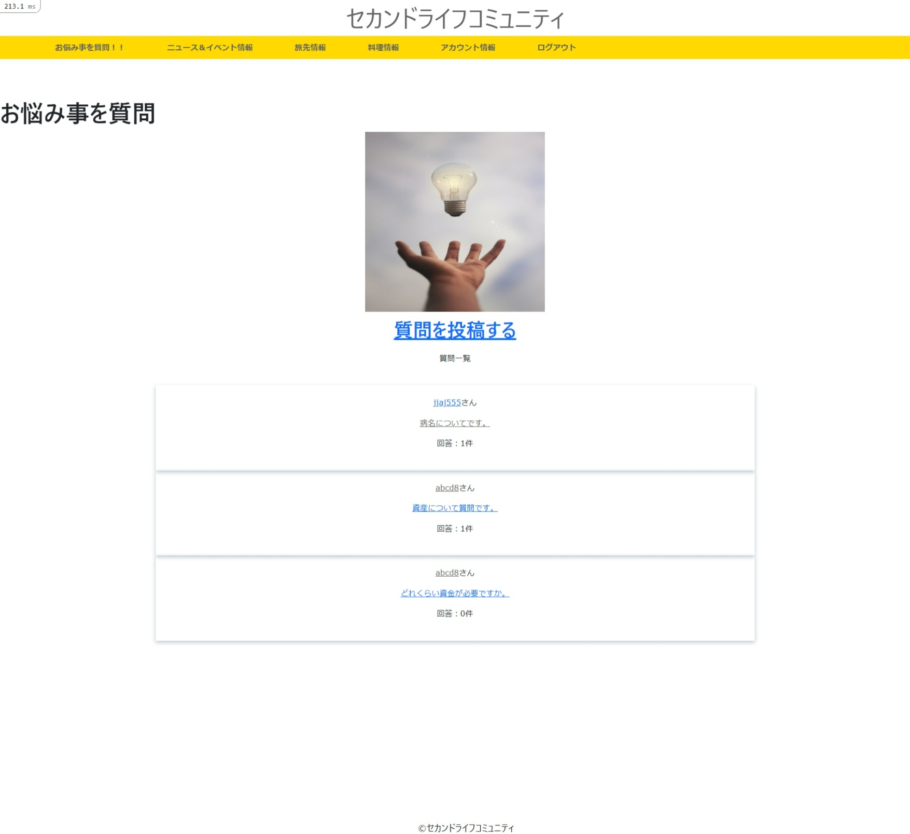

ニュース情報のページ
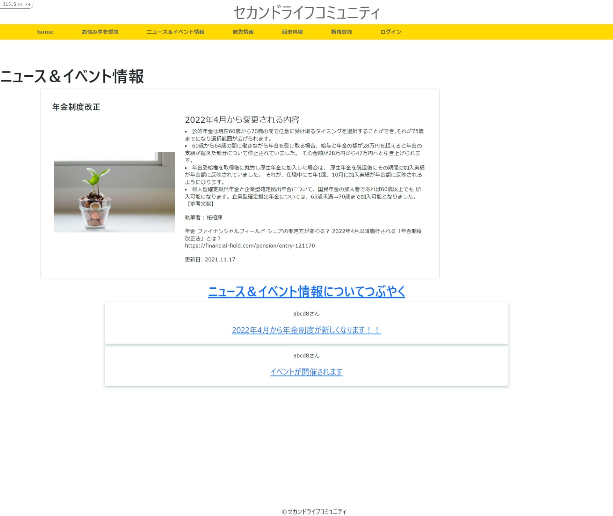
おすすめ旅先情報ページ
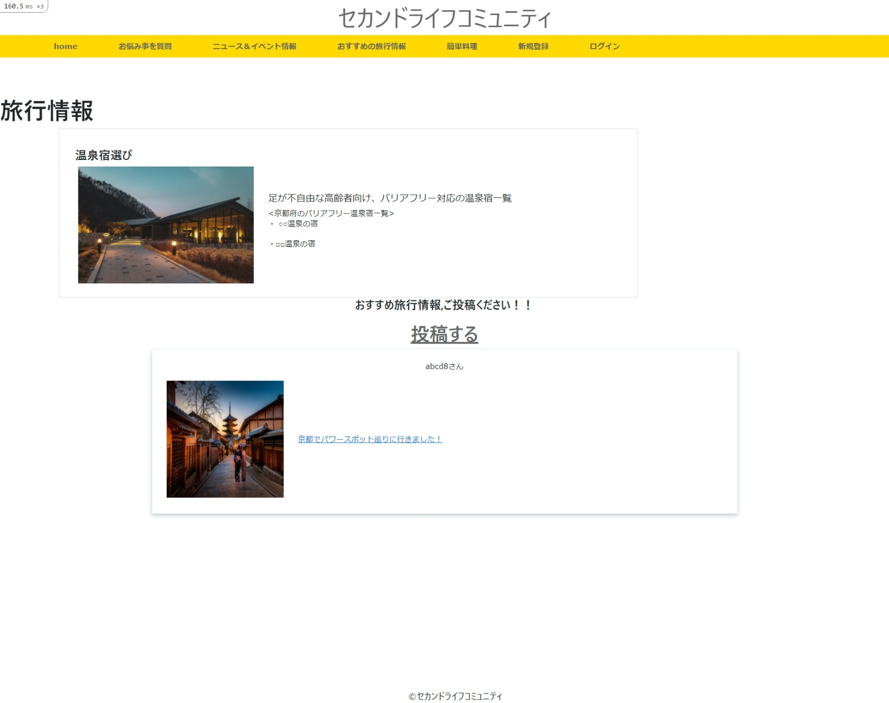
簡単な料理の作り方と、作ってみた料理を投稿できるページ
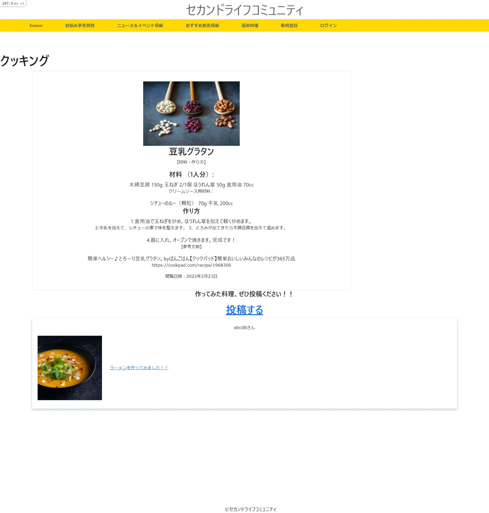
ユーザーのページ ・ログイン画面と新規登録画面、ユーザー編集画面があり、下記がユーザ画面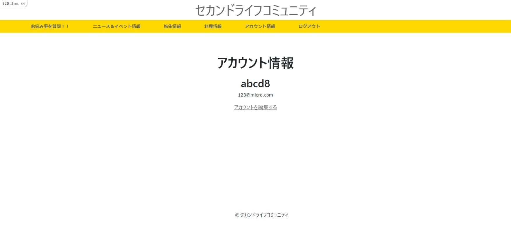
5.Laravelで質問投稿サイト
Laravelは人気が高いフレームワークなのでマスターしたいと考え,質問投稿サイトを制作しました。
質問投稿、回答投稿、ログイン機能があります。ログインしないと作成、編集、削除できません。
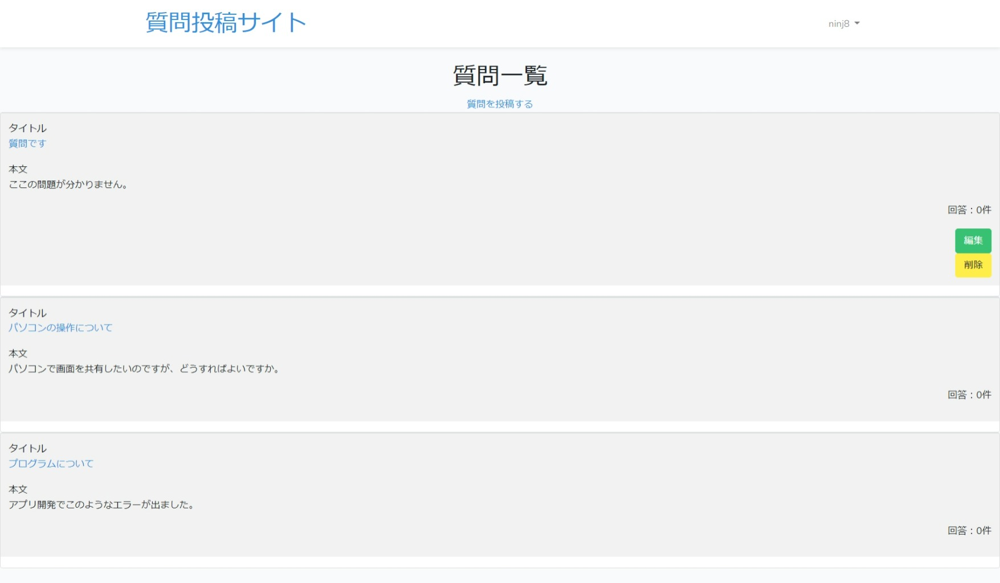・質問詳細画面
回答はログインしないと、削除できません。
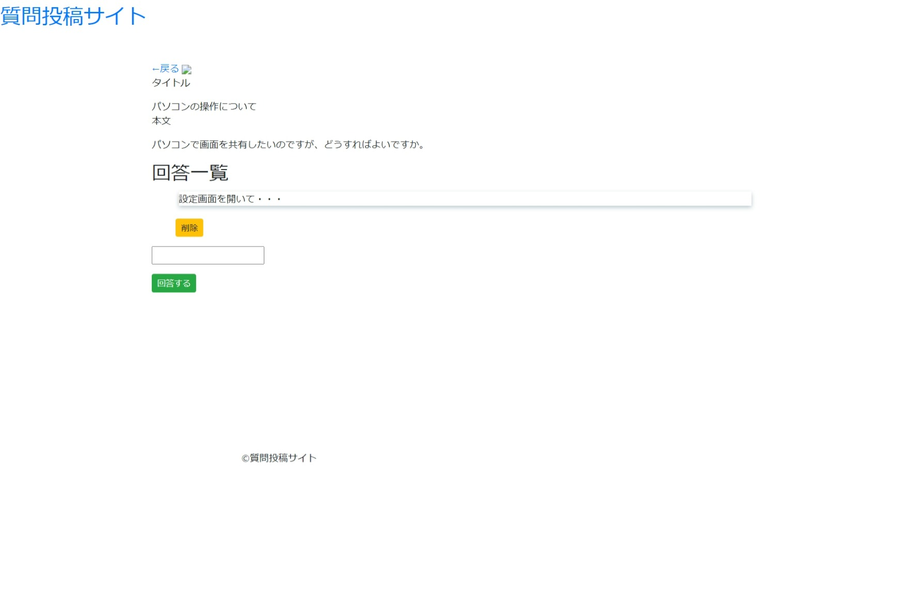2.知識・スキルなど
大学では経営学と共に情報処理の基礎的な理論、ネットワークについて学び、評価は90点以上でした。 HTML,CSS,JavaScriptをコピーアンドペーストする業務と、JavaScriptは修正を加えた実務経験があります！ TortoiseGit使えます！ 可能なプログラミング言語はHTML,CSS,PHP(作成、一覧表示),Ruby on Rails,Laravel、Java(Android)です。Slack使用経験があります。UbuntuにXAMPPをインストールして、PHPを 起動させたことがあります。またWordPressでプラグインを使いお問い合わせフォームを作成した事があります。WEBライティングの経験(エンタメ系記事作成）があります！ Wordで議事録作成,Excelで検査データ入力を実務で経験があり、PowerPoint,Access(正規化理論、SQL実行）も使用できます。ExcelはVBAで請求書を独学で作った経験があり、プログラムも組めます。Accessでは、 簡単な入力フォーム作成と簡単なレポート作成ができます。
3.開発者について
分析が得意です。大学で財務分析や企業分析の講義を履修しておりましたが、評価は全て80点以上でした。一つの事を一週間くらい調べるくらい調べる事が好きで、その結果質の高い分析ができ、評価80点を 得られたと考えております。 得意の分析力で、あらゆる課題を解決します。
これからの目標として、Androidアプリ開発はデータベースにデータを入れる処理だけではなく他のスマートフォンとコミュニケーションを取れるアプリを開発していきたい。 そして企業のアプリをリリースまで一人で行えるようになり、プロジェクトマネージャーも目指していきたいと考えております。